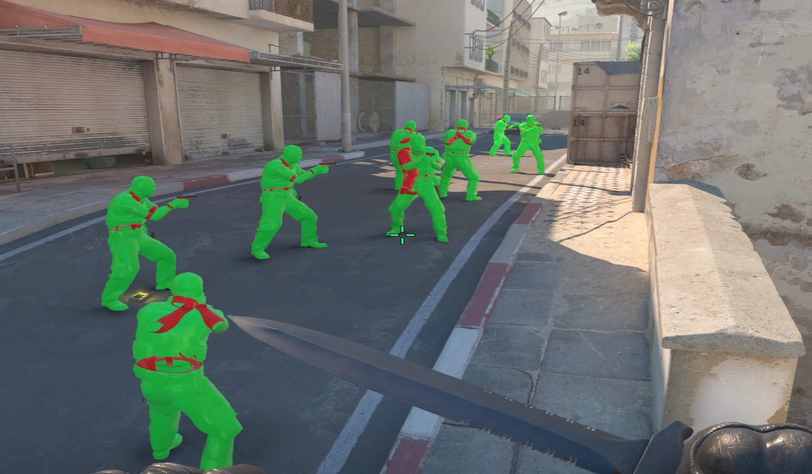

CS2 internal cheat
See everything. Land every jump. Miss nothing.
Kinetic runs inside the game, not beside it. Every body is painted by the game's own renderer, every jump is written on the tick it belongs to, and nothing on screen is a guess.
- Material chams
- Sub tick bunny hop
- Aimbot
- Triggerbot
- Silent autofire
- No recoil
- Glow
- Radar
- Hit feedback
- World colours
- Auto stop
- Skeleton ESP
- Material chams
- Sub tick bunny hop
- Aimbot
- Triggerbot
- Silent autofire
- No recoil
- Glow
- Radar
- Hit feedback
- World colours
- Auto stop
- Skeleton ESP
01 What Kinetic is
A cheat that reads the game instead of guessing at it.
Most cheats paint boxes over a screenshot of the game and hope the pixels line up. Kinetic is injected into Counter-Strike 2 and talks to the engine on its own terms. It asks the schema system where every field lives, so a game update changes nothing. It hooks the scene renderer, so chams know whose body they are painting. It writes the jump into the input the game is about to read, so a bunny hop lands on the exact tick.
It is built for offline play against bots on an insecure server, by one person, in the open. Every feature on this page has been tested in a real match before it was written here.
- Offsets
- Resolved at runtime, zero hardcoded
- Ground contact
- One tick per landing, measured
- Chams
- Game materials, per entity
- Menu
- Own widget kit, true proportions on stretched res
02 Features
Everything in the build today.

-
Material chams
The game's own material system builds the paint and the scene renderer applies it per body. Exact team colours, every distance, corpses go plain the moment they drop.
-
Sub tick bunny hop
The jump is written at the predicted landing inside the tick. One tick of ground contact on nearly every landing, which is as fast as the engine allows.
-
Aimbot, triggerbot, silent autofire
Field of view and smoothing you set, auto stop that counter strafes through the movement buttons before the shot, and no recoil on top.
-
ESP and radar
Boxes, health, armour, weapon, skeleton, glow, a radar, and hit feedback. Flashed, scoped and defusing called out when they apply.
-
Movement
Auto strafe that follows your mouse through the game's strafe keys, quick stop, and a third person view the game draws itself.
-
A menu that behaves
Square, solid, flat. Group boxes titled in the border, help on hover, binds shown as keys, and a watermark you can drag.
03 Discord
Watch it get built.
Progress, test footage, and the updates as they land. Nothing is for sale right now.
Join the DiscordInvite link goes live with the server.